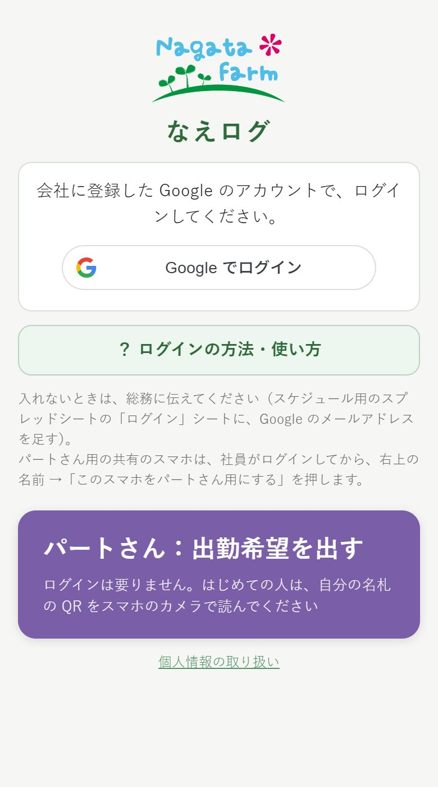
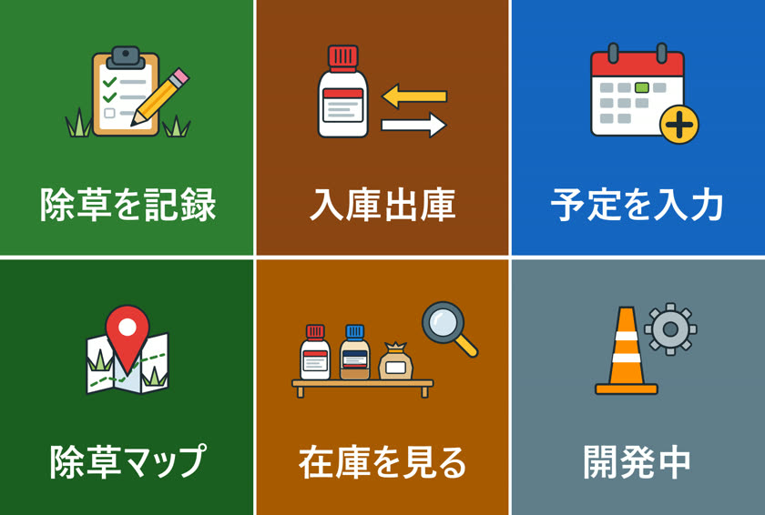
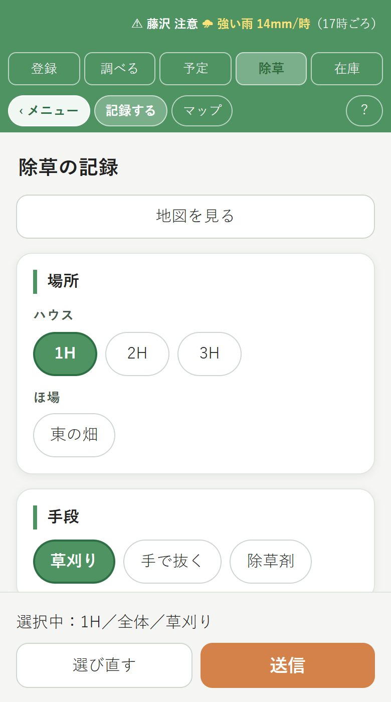
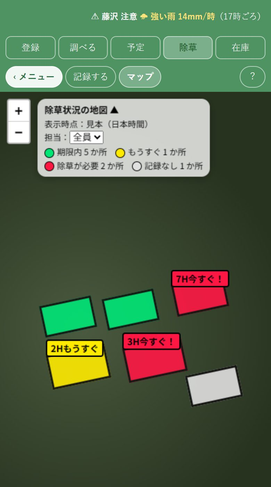
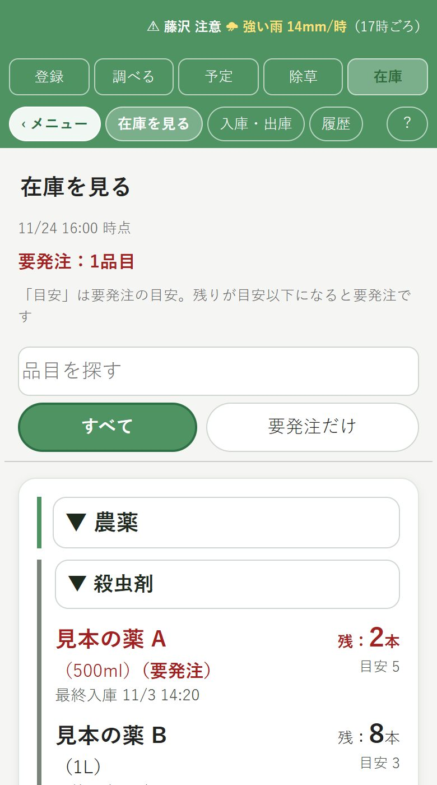
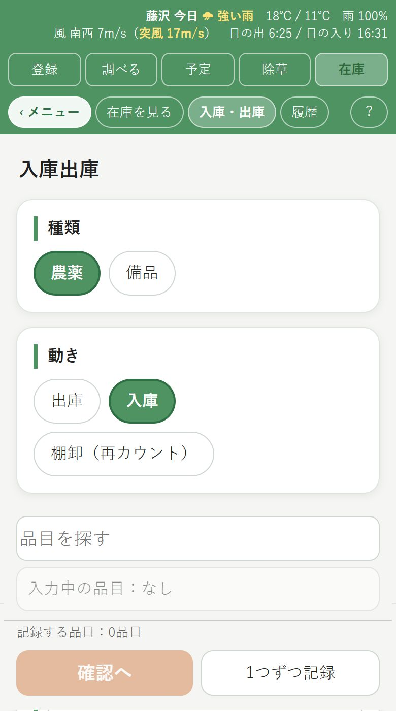

ログインする

1- 1Google でログインを押す
- 2会社に伝えた Google のアカウントを選ぶ
- 3メニューが出たら完了。30日間はログインしたまま
はじめての人は、使っている Google のメールアドレスを総務に伝えてください。登録が済むと入れます。
LINE の下のメニューから開く

- 1使いたいボタンを押す。Chrome などのブラウザで開く
- 2はじめてのときだけ、ログインの画面が出る。ログインすると、押した画面になる
画面を移る

12- 1上の緑の帯で、登録・調べる・予定・除草・在庫に移る
- 2‹ メニューで、なえログのメニューに戻る
- ？右の ？ で、その画面の使い方が開く
除草を記録する
123
- 1場所を押す（いくつでも）
- 2手段を1つ選ぶ。「必須」の欄が出ていたら、それも選ぶ
- 3送信を押す
まちがえたら、画面を下へ送って「記録を取り消す」。自分が 24時間以内に入れたものを取り消せます。
この画面を開く除草マップを見る

1- 1除草の画面で マップを押す
- 2場所を押すと、最後に除草した日・担当が出る
期限内
もうすぐ
除草が必要
記録なし
左上の窓は、題を押すとたためます。画像は見本の絵です。
在庫を見る

12- 1種類 → 区分の見出しを押すと、品目と残りが出る
- 2要発注だけで、発注が要る品目だけにする
- 赤赤い字は要発注。残りが「目安」以下
入庫・出庫を記録する

124- 1種類を選ぶ
- 2動きを選ぶ（出庫・入庫・棚卸）
- 3下の区分をひらいて、品目に数を入れる
- 4確認へ → 中身を見て 記録する
棚卸は「今、数えた数」を入れます。その数が残りになります。まちがえたら「記録を取り消す」。
この画面を開く予定を入力する
- 1空いている時間を押して、作業を入れる
- 2入れた作業を押すと、時間を変える・消すができる
- 3予定を送るを押す
困ったとき
| 出たこと | やること |
|---|---|
| 「一覧にありません」と出る | 別の Google のアカウントを選び直す。だめなら、総務にメールアドレスを伝える |
| ログインを押しても進まない | LINE の中で開いている。右上の「︙」→ ブラウザで開く |
| 画面が古い・ボタンがない | 画面を下に引いて、読み込み直す |
| 除草・在庫が出ない | ログインした社員にだけ出る |